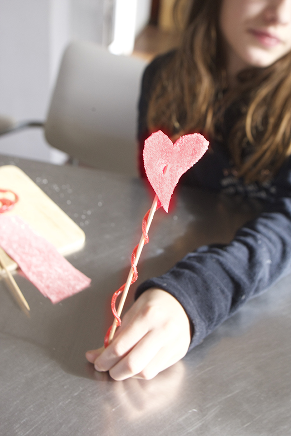

Eine Süße Fee mit ihrem süßen Zauberstab.


Eine Süße Fee mit ihrem süßen Zauberstab.

Forme einen Draht in die gewünschte Buchstabenform und fädel anschliessend die einzelnen Teile einer oderer mehrer essbarer Ketten auf den Draht.
Weiterlesen →
Schäle die Süsskartoffel und schneide sie in dünne Scheiben, am besten mit einer Gurkenreibe. Dann kann man, wenn man möchte Plätzchformen ausstechen. Man pinselt ein bischen…
Weiterlesen →
Hannah und Noah wollten in der Küche alleine gelassen werden und das ist das Ergebnis. :-)
Weiterlesen →
Kekse mit Marmeladen Herzen zum Valentinstag
Weiterlesen →
Der schnellste Nachtisch zum Valentinstag. Pfirsich mit Herz!
Weiterlesen →
Hannah bastelt Herzanhänger, getrocknete Cranberries auf Draht gefädelt.
Weiterlesen →